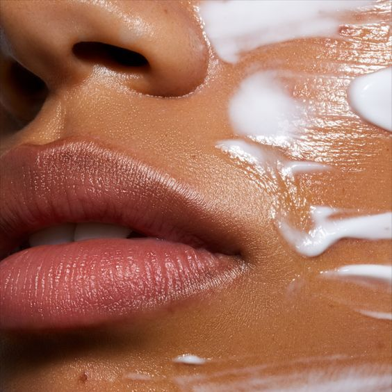
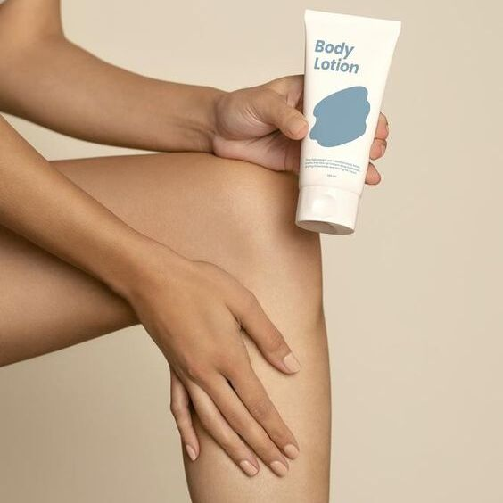

ILU LIFEHACKID
SÄRAV NAHK
Särava naha saavutamiseks soovitatakse kasutada päikesekreemi.
Samuti päikesekreemi pikaajalisel kasutamisel on ka muid boonuseid,
näiteks aitab see vananemisel kortsude vastu ja aitab hoiduda vähist.


NAHA NIISUTAMINE
Kuiv nahk on väga paljudele probleemiks.
Selle jaoks soovitatakse niisutada nahka kreemiga,
kui nahk on veel niiske. Niiviisi imendub niiskus paremini nahasse.
